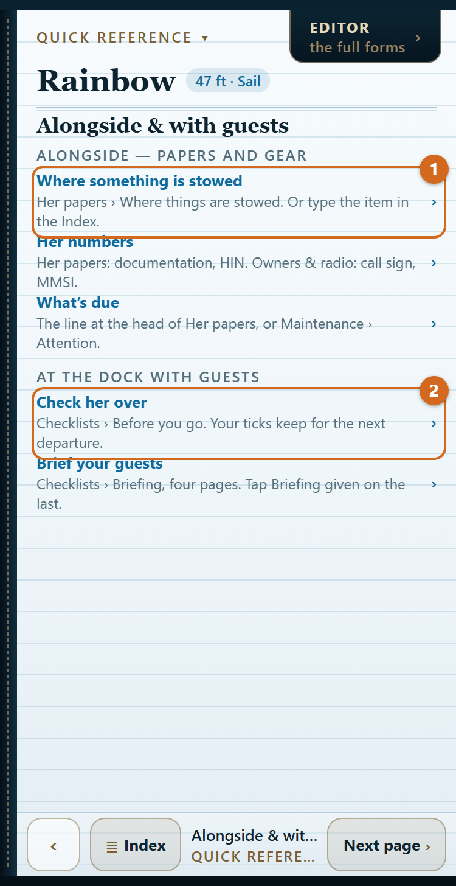
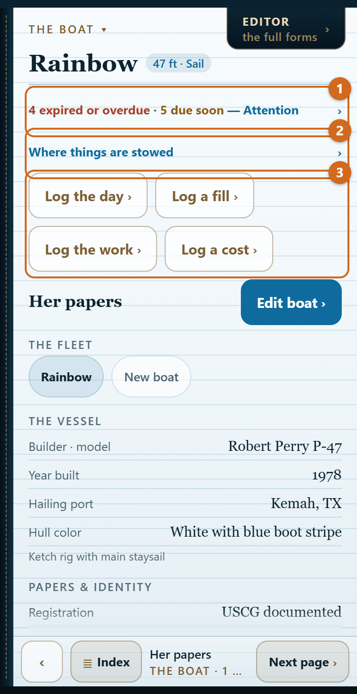
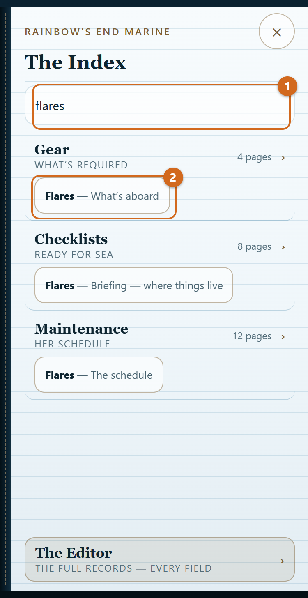
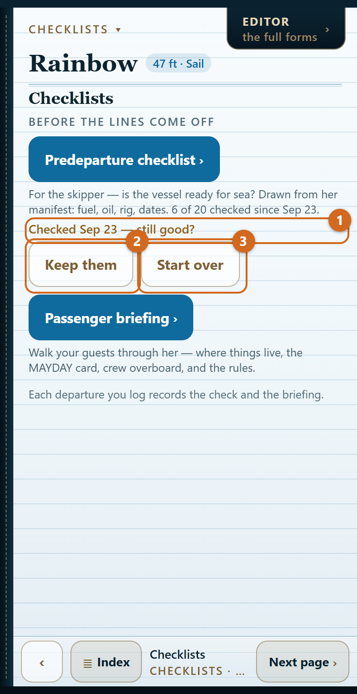
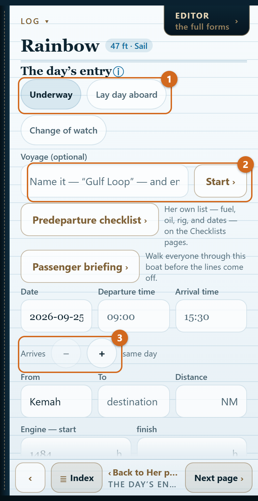
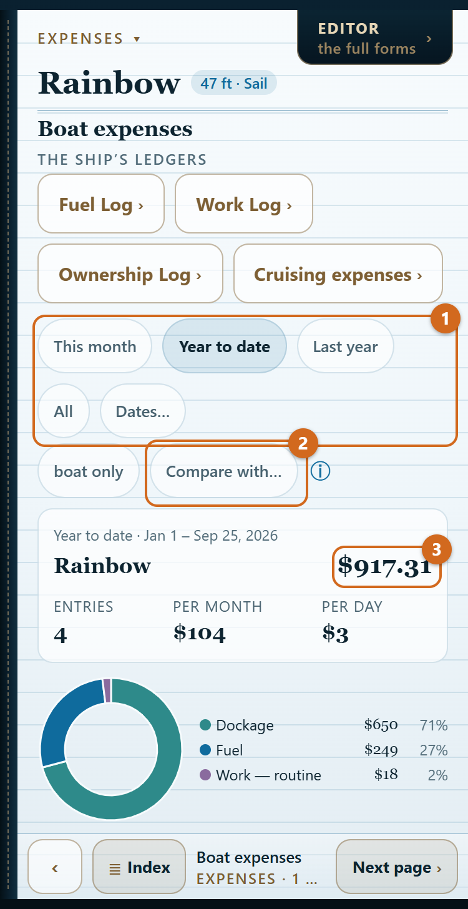

Rainbow’s End Manifest — the guide

Part 1 — By moment
Setting her up
Start
- Open the app. The first page says what it does.
- Tap Welcome aboard — set up my boat to start your own, or Explore with Rainbow first to look around the sample ketch. Your own boat never mixes with Rainbow’s.
Tell it about her once
On Her papers, tap Edit boat. Four answers set the gear list: her length (LOA sets the equipment class), propulsion, fuel, and inland or coastal waters. Then, in any order:
- Her papers and identity: registration, official number, HIN, hailing port.
- Owners and radio: the owners, the people in charge, call sign, MMSI. The MAYDAY card on the briefing reads these.
- Systems: heads, generator, air conditioning, propane, shore power, solar and wind, batteries.
- Tanks: each fuel and water tank with its capacity, the burn rates, the water maker.
- Hour meters: each engine’s and the generator’s reading today. The log’s running totals start from these, and the maintenance schedule comes due by them.
- The vessel: hull color, identifying features and a photo — what a float plan or a search asks for.
Tap Done. Every page redraws from her. Change her length later and the Gear list redraws with it.
Record where the gear is stowed
- Gear › What’s aboard › Log the gear.
- Check each item aboard and type where it lives: “port cockpit locker“.
- The briefing’s Where things live page and the stowage door on Her papers now say exactly that.
Another boat
Her papers › New boat. Each boat keeps her own book: gear, dates, log and ledgers never mix. The chips under The fleet switch between them.
Alongside for a boarding

The book opens on Her papers, or on the page you left if you were there in the last twelve hours.
- Her numbers. Her papers shows the registration, official number and HIN. Owners & radio, the next page, shows the call sign and MMSI.
- Where something is stowed. Tap Where things are stowed on Her papers, or type the item in the Index: “flares“, “extinguisher“.
- The required gear. Gear › What’s aboard lists the federal minimum for her, each item with its citation, its expiry and where it is stowed. Beyond the minimum follows, kept apart. The federal items are minimums; state law can add to them.
- What’s expired or due. The line at the head of Her papers counts it; tap it for Maintenance › Attention.
- Clearing in abroad. Gear › Inventory is her declaration: firearms (even “none“), equipment with serials, alcohol and tobacco, medications, food, animals. Record it in the Editor’s Gear tab; Share the list hands an official the whole thing as text.

At the dock with guests
Check her over
- Checklists › Before you go. The list is drawn from her: a gasoline inboard gets the blower, a sailboat her rig and jacklines.
- Tick each line as you check it. Your ticks keep for the next departure.
- Ticks more than a day old ask “still good?” Tap Keep them, or Start over to clear them.

The float plan line opens Rainbow’s End Float Plan. Leave word ashore before you leave the dock.
Brief your guests
- Checklists › Briefing: four pages — calling for help, where things live, crew overboard, the rules.
- Read them through with your guests aboard.
- On the last page, tap Briefing given. The mark stands 24 hours; Undo takes it back.
The day’s entry records both: the log reads “checked 14 of 15 · briefed 08:40“.
Under way
Start a voyage
A voyage is a trip under one name: a day sail, or weeks of legs and lay days.
- Her papers › Log the day.
- Type a name under Voyage and tap Start.
- Every entry collects under it until you tap End the voyage on the day’s entry. After seven days with nothing logged, the book asks whether she is still under way.
Log the day
- Her papers › Log the day.
- Choose Underway for a day that moves her, or Lay day aboard for a day at anchor or in a marina away from home.
- Fill in the date, the times, where from and where to, the distance, the engine hours (the start is filled in from her hour meter), the persons aboard, the weather and the journal.
- If the check or the briefing was done, their chips are on: Record the predeparture check, Record the briefing.
- Tap Log the day.
A passage of a day or more

- As you leave, fill in the day’s entry and tap Log the departure. The entry is saved as under way; every day at sea counts toward the voyage and the water estimate.
- When you get in, tap Arrived at the top of the day’s entry. The same entry opens with the arrival day set.
- Add the arrival time and engine hours, take the miles the watches logged, and tap Log the arrival.
To log a whole passage after you arrive, use the Arrives stepper under the times to set the day she got in.
The change of watch
- Her papers › Log the watch, or Change of watch on the day’s entry.
- Write the time in local time or UTC; the page shows the other.
- Fill from GPS, or type the position as you would on a chart: 29 18.4 N, 94 47.2 W.
- Add course and speed, wind, sea, barometer (or tap to read the phone’s own), sky, sails, engine, and who kept the watch. Wind, sea, sky, sails and engine carry over from the last watch.
- Tap Log the watch.
From the second position on, the page works out the distance, speed and course made good. The barometer’s three-hour trend is given in the forecast’s words, and a quick fall is flagged. Watches add no miles or hours to the voyage.
Fuel and water aboard
Log › Estimated fuel & water. Each figure is an estimate and says what it runs from: a measured level, a fill marked topped off, or nothing yet. The gauge outranks the arithmetic.
After the fact
Log a fill
- Her papers › Log a fill. The form opens over the Fuel Log.
- Fill in the date, gallons, price and dock. Mark topped off if she was; the estimate starts over from full.
- The voyage chip proposes the voyage for that date. Tap another, or none.
- Tap Log the fill.
Log the work, a cost or an expense
- The work — repairs, routine maintenance, equipment added: Her papers › Log the work.
- A cost — the home slip, storage, insurance, registration, dues: Her papers › Log a cost.
- An expense on a voyage — provisions, meals ashore, fees and permits, transport ashore, moorings and transient slips: Her papers › Log an expense (the button reads so while a voyage is under way). The ⓘ beside Category says what each category takes.
Measure a tank
- Fuel: Expenses › Fuel Log › Measure on the tank’s line. Set the level by the quarters or in gallons.
- Water: Log › Estimated fuel & water: Topped off today, or type the measured level.
Correct or delete an entry
Tap it on its page. The same form opens with Save changes, and a delete button below it that asks first.
Photos on a day
- On the day’s entry, or on a logged day, tap Add photos or Take a photo (up to twelve a day).
- Tap a thumbnail for the full view: swipe through the day, write a caption, share, or delete.
The app keeps a copy of about 200 KB; your originals stay in Photos.
At year’s end
Choose the dates
Every ledger and the log open on year to date. At the head of the record, tap This month, Year to date, Last year, All or Dates…. The choice carries from page to page while the app is open.
What she cost
- Expenses › Boat expenses: the total for the dates, by category. It counts fuel, work and ownership; tap the boat only chip to add the fourth ledger, and it reads with cruising expenses.
- Tap Compare with… to set a second period beside it — the same dates last year, the whole of last year, or dates you type — with the difference in dollars and percent.

Send the year’s expenses
- Expenses › Boat expenses, entries.
- Choose Last year.
- Tap Export as CSV for a spreadsheet, or Export as PDF for a statement. Both go out through the share sheet: Mail, Files, AirDrop.
What a voyage cost
Log › Voyage expenses, the page after the voyage card: the total, per day and per nautical mile, by category, from all four ledgers. Entries in the voyage’s dates without a voyage are listed with a button to assign them.
Sea service
Log › Sea service tallies what the CG-719S asks for each year: the days (four hours or more under way, by default), the hours, the dates and the waters. Set the waters on each day’s entry, and gross tonnage on the Editor’s Boat tab. Tap Share as text to copy the figures onto the form. You attest them; the app prepares them.
A voyage’s track
Log › The log › Share as GPX on the voyage card: a track for each passage, a point for each watch that carried a position. Open it in your chart app.
Housekeeping
Back up the book
Her papers › Edit boat › Export the book writes every boat, her gear, dates, log and ledgers to one file. Save it somewhere you control. Import a book brings it back. The export records which photos a day had, not the pictures.
iPhone and iPad
- Her papers › Edit boat › iCloud sync › Sync her books across your devices. Switch it on on each device.
- Edits reach the other device when it next opens the app, or on Sync now.
The copy lives in your own iCloud; we cannot read it. If two devices edit the same boat, the newer edit keeps that boat’s whole book. Finish an entry on one device before picking up the other, and update both devices together.
A new phone
With iCloud sync on, switch it on on the new phone and the fleet comes down. A device backup or Apple’s Quick Start also carries the whole book. So does an exported book.
Delete a boat
Her papers › Edit boat › The fleet › Delete. It asks first. (With one boat aboard there is nothing to delete.)
Where things stand on this device
Edit boat › About this app shows the version and how much space the voyage photos take.
Part 2 — Reference
Every page, one line each
The Boat
- Her papers — what’s due, the stowage door, the day’s buttons, the fleet, her identity.
- Owners & radio — call sign, MMSI, owners and who’s in charge.
- Dimensions & propulsion — LOA, beam, draft, air draft; engines; waters.
- Systems aboard — heads, generator, air conditioning, propane, sea water.
- Power — shore power, wind, solar, batteries.
- Capacities — tanks and burn rates.
Gear
- What’s aboard — the federal minimum for her, with expiry and stowage.
- Federal requirements, continued — the rest of the minimum.
- Beyond the minimum — the recommended gear.
- Inventory — the declaration for clearing in.
Checklists
- Checklists — the doors to Before you go and the briefing.
- Before you go — the boat; on deck — the skipper’s predeparture check.
- Briefing — calling for help; where things live; crew overboard; the rules — the passenger briefing, Briefing given on the last.
Log
- Estimated fuel & water — what is aboard, and what each figure runs from.
- The day’s entry — a day under way, a lay day, a passage.
- The change of watch — while under way, or once asked for.
- The log — the days, the voyage card, the miles under her keel.
- Voyage expenses — what a voyage cost.
- Sea service — the figures for the CG-719S.
- The watches — the watches logged, newest first.
Expenses
- Boat expenses — the total, by category, and Compare with….
- Boat expenses, entries — the entries, Export as CSV or PDF.
- Fuel Log, Work Log, Ownership Log, Cruising expenses — the four ledgers.
Maintenance
- Attention — what is expired, overdue or due soon.
- The schedule — every item, its last date and hour meter.
Quick reference
- Four pages: where each job lives.
The Editor’s five tabs
Open the Editor from the tab at the top of any page; The Book on its bar brings you back.
- Boat — the full manifest, the fleet, iCloud sync, Export and Import.
- Gear — every item, aboard or not, its stowage and dates; the Inventory.
- Briefing — the briefing in one scroll, and Briefing given.
- Log — every day and voyage, searchable by name, place, weather, journal or date.
- Maintenance — the whole schedule, and the ledgers’ totals by month, year and category.
Glossary — the app’s own words
- Federal minimum — what 33 CFR and 46 CFR require her to carry.
- Beyond the minimum — gear the app recommends; never counted as required.
- Hard date — a legal or safety expiration. Past it, the gear doesn’t count.
- Attention — everything expired or overdue, expirations within 60 days, service within 30 days or its hour margin.
- Replace, Inspect, Test, Clean, Exercise, Service, Renew — what the maintenance job is. Replace means new on schedule; Inspect means replace only what is worn.
- Voyage — entries collected under one name until you end it.
- Leg — a day’s entry under way.
- Lay day — a day aboard without getting under way.
- Passage — a leg logged at departure and finished on arrival, however many days between.
- Watch — a change-of-watch record: time, position, weather. It adds no miles or hours.
- Estimate — a figure worked out, not read from a gauge. Each says what it runs from.
- Hour meter — an engine’s or generator’s running-hours meter.
- Persons aboard — on a day’s entry, the people aboard that day; on Gear, the most she is equipped for.
- The four ledgers — Fuel Log, Work Log, Ownership Log, Cruising expenses.
- Transport ashore — taxis, rental cars, ferries, excursions once you have arrived.
- Sea-service day — a calendar day with four hours or more under way (the threshold can be set to eight or twelve).
- Sounding — a tank’s level measured, by quarters or in gallons.
Questions this guide doesn’t answer? The support page has the rest, or write to support@RainbowsEndMarine.com.